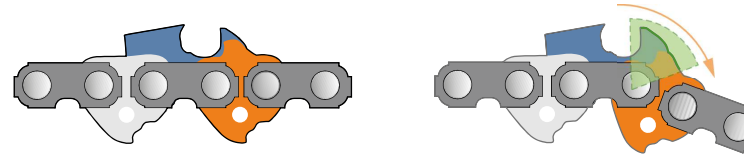
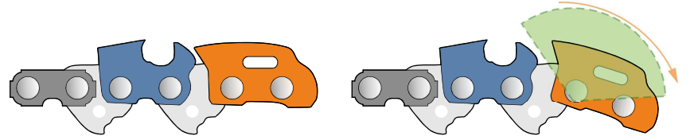
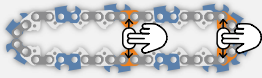
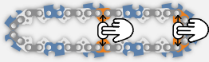

Motosierras II
🔧 Grupo Motor y Averías Comunes
Sistema de Transmisión
El giro de la cadena se consigue mediante un embrague centrífugo que transmite el movimiento del motor a la cadena a través de zapatas, muelles y una campana.
El giro de la cadena se consigue mediante un embrague centrífugo que transmite el movimiento del motor a la cadena a través de zapatas, muelles y una campana.
Transmisión (embrague)
- Avería Embrague patina por cadena demasiado apretada o por grasa/aceite
- Avería Freno de cadena no actúa correctamente
- Avería Cadena gira al ralentí por muelles flojos
Refrigeración (aire)
- Avería Máquina se calienta por suciedad en el sistema
Filtro de Aire
- Avería Pérdida de potencia y aumento de consumo por suciedad
Escape con Silenciador
- Sin averías Sistema confiable sin problemas específicos
Tapón de Combustible
- Avería Pérdida de combustible por mal ajuste o desgaste
Sistemas Antivibración
- Avería Mal funcionamiento por desgaste
⛓️ Cadena de Corte
Composición y Funcionamiento
La cadena está formada por eslabones unidos por remaches: de corte o guía. Cada eslabón de corte actúa como un cepillo de carpintero en miniatura. Eficacia determinada por afilado y altura entre diente y andarín.
La cadena está formada por eslabones unidos por remaches: de corte o guía. Cada eslabón de corte actúa como un cepillo de carpintero en miniatura. Eficacia determinada por afilado y altura entre diente y andarín.
🦷 Diente Cortante
Dependiendo de la dureza de la madera a cortar elegiremos la forma de estos dientes: diente redondo, semiredondo o cuadrado.
🎚️Talón de Profundidad
Marca distancia entre parte superior del limitador de profundidad (andarín) y arista del filo del diente de corte. Determina profundidad de penetración del diente de corte en madera y el grosor de virutas.
⚙️Eslabón Motriz
Va por dentro del carril del espadín. Se distingue por su forma de aleta de tiburón. A su espesor se le denomina “galga”.
🔗Paso de Cadena
Es la distancia que hay entre 3 remaches consecutivos, desde el diente de corte al eslabón de unión.
🔩Remache
Es el encargado de engarzar los eslabones.
Profundidad de Corte
Distancia entre el andarín y la gubia. Suele estar entre 0,50mm y 0,80mm según madera. Con una distancia general de 0,65mm se consigue un corte suave y preciso.
Distancia entre el andarín y la gubia. Suele estar entre 0,50mm y 0,80mm según madera. Con una distancia general de 0,65mm se consigue un corte suave y preciso.
Perfiles de Corte
Diferentes diseños según tipo de trabajo y madera.
Diferentes diseños según tipo de trabajo y madera.
Perfil Redondo
• Más sencilla de afilar
• Menor eficiencia en maderas duras
• Buen comportamiento en blandas
• Menor eficiencia en maderas duras
• Buen comportamiento en blandas

Perfil Semi-Redondo
• Mayor eficacia
• Requiere menor potencia
• Afilado más complejo
• Requiere menor potencia
• Afilado más complejo

Perfil Cuadrado
• Más agresivo y eficaz en maderas duras
• Mayor rendimiento
• Afilado más complejo pero duradero

• Mayor rendimiento
• Afilado más complejo pero duradero
PRECAUCIÓN - DESAFILADO
Una cadena desafilada es ineficiente y peligrosa. La presión adicional necesaria para cortar aumenta las probabilidades de accidente.
Una cadena desafilada es ineficiente y peligrosa. La presión adicional necesaria para cortar aumenta las probabilidades de accidente.
🛡️ Consideraciones Especiales
Sistema Antirrebote
Minimiza el riesgo de retroceso violento al tocar la punta del espadín con objetos. Los sistemas antirrebote hacen más seguro el trabajo pero reducen la velocidad de corte.
Minimiza el riesgo de retroceso violento al tocar la punta del espadín con objetos. Los sistemas antirrebote hacen más seguro el trabajo pero reducen la velocidad de corte.
Eslabón Motriz de Seguridad

Remache de Seguridad

Secuencias entre Dientes de Corte
La distribución de dientes varía según la longitud del espadín para optimizar equilibrio y eficiencia.
La distribución de dientes varía según la longitud del espadín para optimizar equilibrio y eficiencia.
Secuencia Estándar
• Espadines < 61 cm
• 2 motrices - 2 motrices - 2 motrices
• 2 motrices - 2 motrices - 2 motrices
Secuencia con Semisalto
• Espadines 61-81 cm
• 3 motrices - 2 motrices - 3 motrices
• 3 motrices - 2 motrices - 3 motrices
Secuencia con Salto
• Espadines > 81 cm
• 3 motrices - 3 motrices
• 3 motrices - 3 motrices
📏 Paso, Longitud y Galga
Identificación de Cadena
Tres medidas clave para determinar compatibilidad con la motosierra. Si esta información está borrada por el desgaste, es importante conocer las mediciones para identificar el tipo de cadena.
Tres medidas clave para determinar compatibilidad con la motosierra. Si esta información está borrada por el desgaste, es importante conocer las mediciones para identificar el tipo de cadena.
Paso de Cadena
Distancia entre eslabones motrices
| Paso | Medida | Uso |
|---|---|---|
| 1/4" | 6,35 mm | Baja potencia |
| .325" | 8,25 mm | 40-50 cm³ |
| 3/8" | 9,32 mm | >60 cm³ |
Longitud
Número de eslabones motrices
Método de medición:
• Cadena extendida
• Contar eslabones de una fila
• Multiplicar por 2

• Cadena extendida
• Contar eslabones de una fila
• Multiplicar por 2

Galga
Grosor de eslabones motrices
| Galga | Espesor |
|---|---|
| Fina | 1.1 mm |
| Regular | 1.3 mm |
| Media | 1.5 mm |
| Gruesa | 1.6 mm |